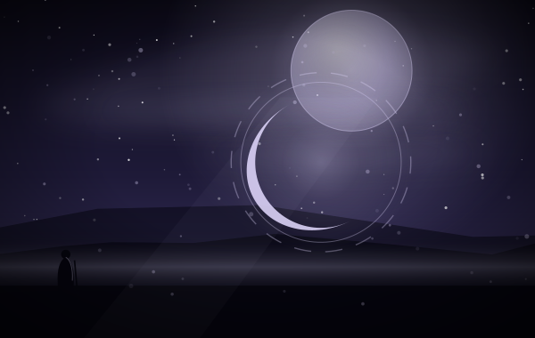

新的勇者 › 莉莉亚编组
十七张里，八张带「觉醒后转换为另一张牌」，实际是五组：月见→弥望、魔力天球→苍白天球、纯粹→寻真、凝聚冲击→纯白冲击、相位移动→逐月。觉醒不是加数值，是把这几张换成另一套规则。
英雄：莉莉亚 月亮有两面，卡也有
类别：觉醒 · 不可构筑
标签（归档者归纳，含规则词条）
释义照录规则原文；标注「归档注」的是归档者补的说明。
觉醒面板不是第四张天赋，带不进卡组。触发它的不是「蓄能两次」本身，而是用掉一张「苍白之月」——苍白百合的蓄能只是递来那张月。苍白之月是传说、上限 2、可以构筑携带，所以三张天赋都能直接走这条路。觉醒之后：己方魔法减一费、入场给「经络」、蓄能产出减费与「苍白缄默」、防御带抽牌。
——归档者，读这张卡的时候